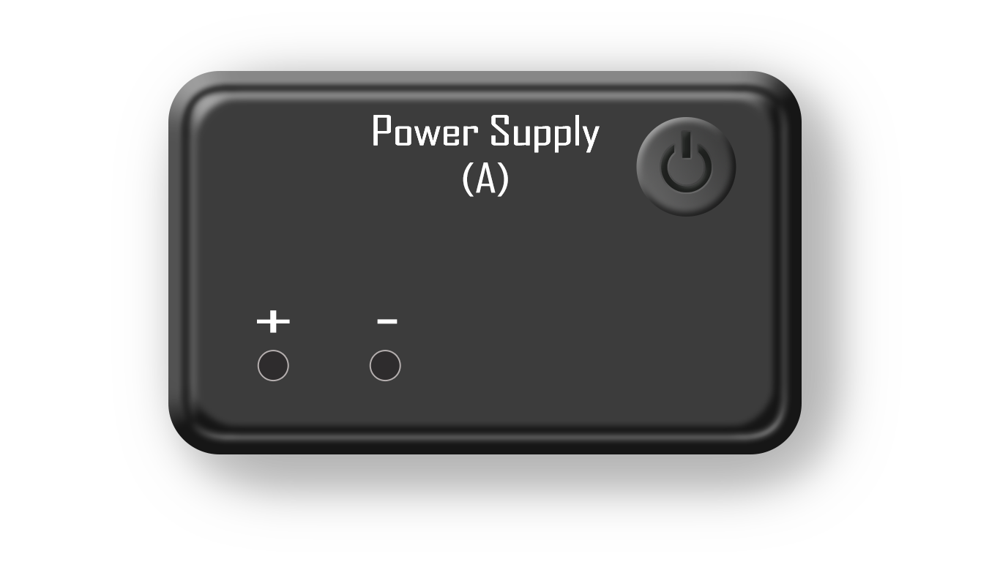

TO VERIFY NORTON'S THEOREM
Instructions
- Set the values of resistances R1, R2, R3, R_load and voltage by adjusting the sliders on left
- Make connections and check them by clicking 'CHECK' button
- Measuer Norton equivalent resistance, use multimeter.
- Short circuit the connections for power-supply.
- Connect blue (upper right hand of main circuit) to the positive of multimeter, and lower node (red) to negative of multimeter.
- To measure short-circuit current, connect power-supply and Ammeter.
- Connect the nodes of power-supply to nodes in circuit (left hand side of the main circuit.)
- Connect blue node form the main circuit (the one next to 'R3') to positive of Ammeter.
- Connect negative of Ammeter to red node (below the blue node).
- To measure voltage across Rl, connect power-supply and volt-meter
- Connect power-supply, just like in the pervious step.
- Connect the blue node of Rl to adjcent blue node in the main circuit.
- Connect the red node of Rl to adjcent red node in the main circuit.
- Click the 'ADD' button to add observations to the table.
- Click the 'CALCULATE' button to verify the reslts.
- Repeat the above process with different values of resistances.
Instructions
SLIDERS
TABLE
| S.No. | V_th | R_th | R_load | Reading |
|---|
CIRCUIT


 
CALCULATIONS